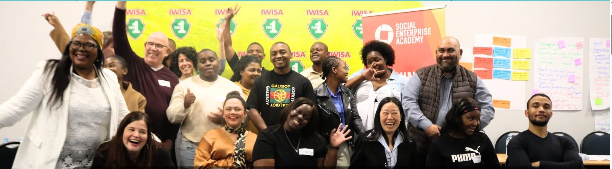

Develop a Theory of Change
Clarify your vision, outcomes and impact pathway.


A practical 2-day programme to help social enterprises, NGOs and purpose-driven organisations measure, communicate and grow their social impact.
About the programme
Measuring your social impact helps you understand what's working, what isn't, and where to focus next. It builds credibility, attracts support, and ensures your work creates lasting, meaningful change.
This programme gives you the practical tools, frameworks and confidence to measure and communicate your impact effectively.
Email usProgramme curriculum
Clarify your vision, outcomes and impact pathway.
Apply practical data collection methods and tools.
Identify what to measure and why it matters.
Map your inputs, activities, outputs and outcomes.
Track progress, learn and adapt.
Turn insights into action and greater results.
Our team
Elena is a senior consultant at Southern Hemisphere with over 15 years' experience as a monitoring, evaluation and learning practitioner, mostly in Africa. She is skilled in program evaluation, strategic review and planning, training, and facilitation. She has a MPhil in Sustainable Development Planning (Cum Laude) from Stellenbosch University. She has recently worked with the Mastercard Foundation, ICLEI Africa, UCT Ascend and the Economic Policy and Research Institute (EPRI).
Since 2017, Elena is a facilitator on Theory of Change and Measuring Social Impact for the Social Enterprise Academy and has also lectured for the UCT School of Business as part of their social innovation curriculum. Elena is interested in weaving environmental sustainability considerations into socio-economic development work and is part of SAMEA's Community of Practice on Just Transition, Ecosystems Health and Transformative Equity.
Elena Mancebo Masa facilitating one of our Measuring Your Social Impact programmes, in partnership with IWISA No.1.
Programme outcomes
By the end of the programme, our participants are able to confidently measure, evidence and communicate their impact, and use that learning to strengthen their organisation and create even greater change.
Find out more
If you're interested in learning more about the Measuring Your Social Impact Programme we invite you to contact us directly. We look forward to welcoming you to our community.
This is more than just another programme, it's a transformative journey for your team, your organisation, and your broader sector.
Contact us